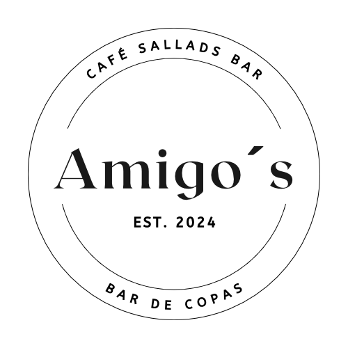

Amigo's Café Sallads Bar
üçΩÔ∏è Dagens Lunch üçΩÔ∏è
Ink. Läsk, kaffe, té – 135 kr
Om oss

Vår historia
Välkommen till Amigo’s Café & Salladsbar i hjärtat av Gamla Stan, Eskilstuna! Vi är ett familjeägt café som brinner för färska, smakrika och hemlagade rätter med inspiration från Georgien, Spanien och Chile.
Ägarna
Amigo’s drivs av Sofia från Georgien och Franco från Chile – två matälskare med en gemensam dröm: att skapa en plats där god mat och trivsam atmosfär står i centrum.
Amigo's Café
Adress:
Köpmangatan 52, Eskilstuna
E-post:
amigo.bardecopas@gmail.com
Följ oss på sociala medier:

Öppettider
Mån - Tor: 09:00 - 18:00
Fredag: 08:00 - 21:00
Lördag: 11:00 - 21:00
Söndag: Stängt